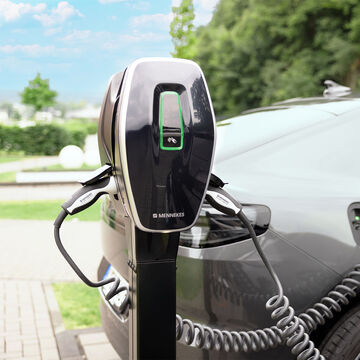

Kort antwoord
Voor een gewone woning volstaat 11 kW zo goed als altijd. Dat laadt een doorsnee elektrische wagen in één nacht van zo goed als leeg tot vol. 22 kW is meestal onnodig: veel wagens kunnen thuis niet meer dan 11 kW opnemen.
Belangrijker dan het vermogen is de sturing: een laadpaal die meekijkt met uw zonnepanelen en met de rest van uw huis, laadt goedkoper én doet uw hoofdzekering niet vallen.

Onze laadpalen komen van MENNEKES. Het is het Duitse bedrijf dat de type 2-stekker ontwierp die vandaag de Europese standaard is — letterlijk het bedrijf achter de stekker die in uw wagen past. Wij plaatsen hun AMTRON® 4You-reeks: volledig in Duitsland geproduceerd, gemaakt om buiten te hangen, en gebouwd om samen te werken met zonnepanelen in plaats van er los naast te staan.
Overschotladen gebruikt de stroom die uw panelen over hebben. De laadpaal schakelt automatisch tussen één en drie fasen, zodat hij ook bij een klein overschot blijft doorladen.
MENNEKES bouwt sinds 1935 industriële stekkers. Elke laadpaal wordt volledig in Duitsland geproduceerd — en dat is ook waar u over tien jaar nog een onderdeel vandaan haalt.
Bestand tegen regen, stof en een stevige tik. Even goed aan een buitengevel als in de garage of carport.
Vaste type 2-kabel van 7,5 meter die netjes rond de paal wikkelt, en de 4Drivers-app om laadsessies en verbruik op te volgen.
Een elektrische wagen aan een gewoon stopcontact laden duurt meer dan een etmaal, en dat stopcontact is nooit ontworpen om urenlang op vol vermogen te staan. Een vast laadpunt bestaat niet omdat het sneller is, maar omdat het veilig is: een eigen kring, een eigen beveiliging, en een toestel dat weet wanneer het moet stoppen.
Aan 11 kW laadt u ongeveer 50 tot 60 kilometer rijbereik per uur bij. Een batterij van 60 kWh gaat aan dat tempo in ruwweg zes uur van bijna leeg naar vol. U hebt 's nachts acht tot tien uur, geen twintig minuten — dus sneller heeft u thuis simpelweg niet nodig.
Bovendien: heel wat elektrische wagens nemen thuis niet meer dan 11 kW op, hoe krachtig uw laadpaal ook is. Wie 22 kW koopt, betaalt dan voor vermogen dat de wagen niet kan gebruiken. Wij vragen daarom altijd naar het merk en model van uw wagen voor we een vermogen voorstellen.
| Uw situatie | Wat wij aanraden |
|---|---|
| Eenfasige aansluiting, gewone verplaatsingen | 7,4 kW. Laadt een volle batterij op in ongeveer negen uur — ruim binnen een nacht. |
| Driefasige aansluiting | 11 kW. Het gangbare vermogen voor thuis, en het maximum dat de meeste wagens aankunnen. |
| Zonnepanelen op het dak | 11 kW met overschotladen en automatische fasewissel, zodat u laadt op wat u zelf opwekt. |
| Twee elektrische wagens | Laststuring over beide laadpunten, zodat ze samen binnen uw aansluiting blijven. |
| Bedrijfswagen die u thuis laadt | Model met MID-conforme meter, zodat uw werkgever de kWh correct kan terugbetalen. |
Sinds de digitale teller draait uw teller niet meer terug. Stroom die u overdag opwekt en niet zelf gebruikt, verkoopt u voor een fractie van wat u er 's avonds voor betaalt. Uw wagen is het grootste toestel in huis dat u zonder enig comfortverlies naar de zonuren kan verschuiven — en daarmee de snelste manier om dat verschil in uw voordeel te draaien.
De AMTRON 4You laadt daarom op overschot: hij neemt alleen wat uw panelen op dat moment over hebben. Het probleem bij zo'n regeling is meestal de ondergrens — op een bewolkte namiddag is er te weinig overschot voor drie fasen en haakt een gewone laadpaal af. Deze schakelt dan automatisch terug naar één fase en blijft rustig doorladen. Onze eigen energiebeheersoftware beslist bovendien elk kwartier wat voorrang krijgt: de batterij, de boiler of de wagen.
Een deel van uw factuur hangt af van uw hoogste kwartierpiek: het kwartier waarin u het meest tegelijk verbruikte. Zet een laadpaal aan terwijl de warmtepomp draait, de oven aanstaat en de vaatwas net begint, en u zet die piek voor een heel jaar vast.
Dynamische laststuring voorkomt dat. De laadpaal kijkt mee met wat de rest van het huis doet en zakt terug wanneer het te druk wordt. U merkt er niets van — uw wagen staat toch de hele nacht — maar uw factuur wel. Meer daarover op de pagina over het capaciteitstarief.
Een laadpaal is een wijziging aan uw elektrische installatie. In Vlaanderen moet die gekeurd worden door een erkend keuringsorganisme voor ze in dienst gaat. Reken op ongeveer 125 tot 250 euro, betaald aan het keuringsorganisme, niet aan ons.
Wat een keuring meestal doet mislukken is niet de laadpaal zelf maar het papier: een ontbrekend eendraadschema of situatieschema. Wij leveren die plannen mee met de installatie, samen met de aparte kring en de juiste differentieelbeveiliging die de keurder zal controleren.
Drie dingen bepalen zowat de hele offerte, en u kan ze meestal zelf al opzoeken: of uw aansluiting eenfasig of driefasig is (dat staat op uw meterkast of op uw factuur), hoeveel meter er ligt tussen uw meterkast en de plaats waar de wagen staat, en welke wagen het is. Hebt u die drie, dan kunnen wij ter plaatse meteen concreet worden in plaats van te schatten.
Voor een gewone woning volstaat 11 kW zo goed als altijd — goed voor ongeveer 50 tot 60 kilometer rijbereik per laaduur, dus een volle batterij in een nacht.
22 kW is meestal onnodig: veel wagens kunnen thuis niet meer dan 11 kW opnemen, dus u betaalt voor vermogen dat uw wagen niet gebruikt.
Voor 11 kW wel. Hebt u een klassieke eenfasige aansluiting, dan laadt u tot ongeveer 7,4 kW — voor de meeste gezinnen nog altijd een volle nacht ruim genoeg.
Wij lezen uw meterkast tijdens het plaatsbezoek en zeggen eerlijk of een verzwaring van uw aansluiting de moeite waard is of niet.
Ja — dat heet overschotladen. De laadpaal gebruikt alleen de stroom die uw panelen op dat moment over hebben en die u anders voor een fractie van de prijs zou injecteren.
De AMTRON 4You schakelt daarvoor automatisch tussen één en drie fasen, zodat hij ook op een bewolkte namiddag blijft doorladen in plaats van af te haken.
Ja. Een laadpaal is een wijziging aan uw installatie en moet in Vlaanderen gekeurd worden door een erkend keuringsorganisme voor ze in dienst gaat. Reken op ongeveer 125 tot 250 euro, betaald aan het keuringsorganisme.
Wij leveren het eendraadschema en het situatieschema mee, want zonder die plannen kan de keurder uw installatie niet goedkeuren.
De laadpaal kijkt mee met wat de rest van uw huis op dat moment verbruikt en past zijn laadsnelheid daarop aan.
Zonder die sturing kan het samenvallen van wagen, warmtepomp, oven en vaatwas uw hoofdzekering doen vallen — en het duwt uw kwartierpiek omhoog, waar u via het capaciteitstarief een jaar lang voor betaalt. Wij zetten laststuring standaard aan.
Ja. De AMTRON 4You heeft beschermingsgraad IP54 en slagvastheid IK10: regen, stof en een ongelukkige tik deren hem niet. Hij hangt even goed aan een buitengevel als in een garage of carport.
Ja. De vaste laadkabel is type 2, de Europese standaard voor wisselstroom, en die zit op zowat elke elektrische of plug-in hybride wagen die in Europa verkocht wordt.
Een laadpaal is dus geen keuze die u aan uw huidige wagen vastklikt.
Daarvoor bestaat een uitvoering met een MID-conforme meter ingebouwd, zodat de geladen kWh officieel geteld en door uw werkgever terugbetaald kunnen worden.
Daarvoor stellen wij de MENNEKES AMTRON® 4You 460 voor. Welke uitvoering u precies nodig hebt, bekijken wij samen met u.
Wij werken met de MENNEKES AMTRON® 4You-reeks. De modellen verschillen vooral in toegangscontrole (RFID-sleutel), meting en app-functies; de laadkabel van 7,5 meter en de behuizing zijn dezelfde.
Welk model past, hangt af van uw situatie — wij plaatsen zowel enkele als meerdere laadpunten, privé en openbaar. Prijs inclusief plaatsing: vanaf 1.600 EUR.
Naast de fabrieksgarantie van MENNEKES geeft ADW een eigen waarborg op de plaatsing.
Wij geven 10 jaar garantie.
Vertel ons kort iets over uw woning en uw wagen. Wij komen langs, kijken ter plaatse, en sturen een duidelijke offerte zonder verplichting.